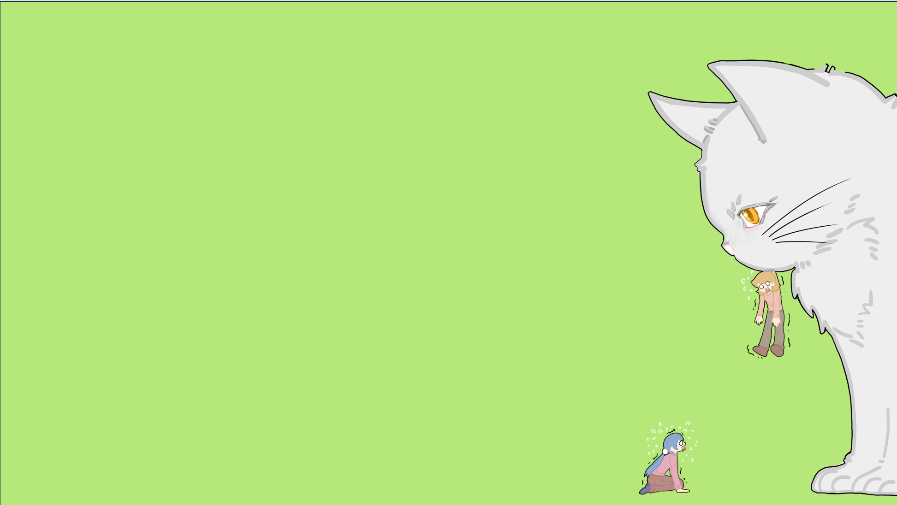
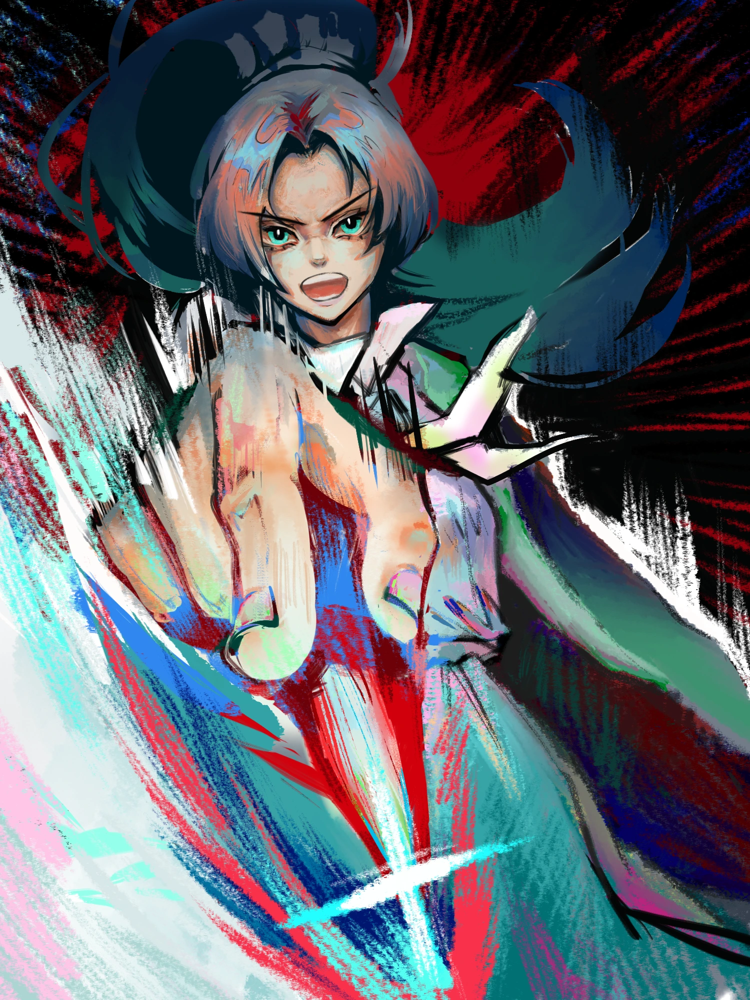
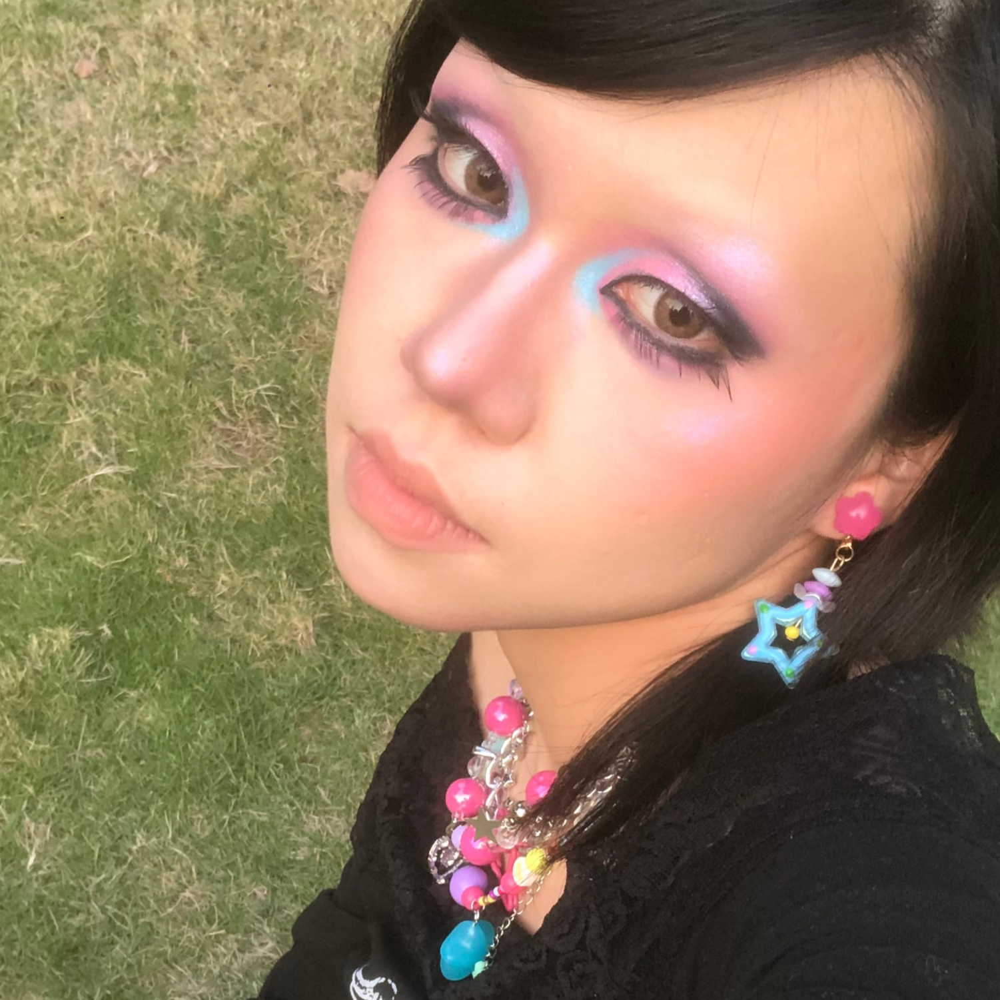

《骸生万物》世界观场景概念设计
古早原始纪元，三大族群在巨兽遗骸塑造的世界中生存博弈，与万物共生。
世界观概念设计 · 漫画分镜 · 纪实短片脚本 · AIGC 影像创作，点击卡片查看完整项目。
古早原始纪元，三大族群在巨兽遗骸塑造的世界中生存博弈，与万物共生。

拖延大学生被诈骗短信与流浪白猫「催债」，催出毕设灵感《催债猫》的日常喜剧。

未来科技 · 机械人外。刑警之女带着 114 机器人，以“乔伊·索伦”之名夺回真相与自己的名字。

四部分镜式纪实脚本：《从未放下》《福贵》《大博》《抗癌厨房》——每一场既在讲故事，也在设计镜头和剪辑。
普通女大穿越无数真实宇宙，用念化解心魔、用战斗斩杀熵魔，治愈“发炎的世界”——但每治好一个别人，她自己的世界就离消亡更近一步。
项目之外的创作经历补充：接触过 AIGC 生视频流程，业余接插画约稿，也发过二创小说、游戏实况、绘画与美妆内容，涉及四个平台（均为零散更新），其中游戏实况的数据相对好一些。

我是袁宝珠，动漫设计专业出身，一名正在求职的内容创作者。 这个网站是我给自己做的作品集：里面从世界观设定、场景概念、漫画分镜，到 AIGC 编导脚本和游戏世界观策划，都是我自己构思、自己动手完成的。
项目之外，我也在接插画约稿、做视频剪辑，并尝试用 AIGC 流程生产视频内容。 我最喜欢的事始终是用画面讲故事——如果你觉得这些能力适合你的团队或岗位，欢迎通过下方邮箱联系我。